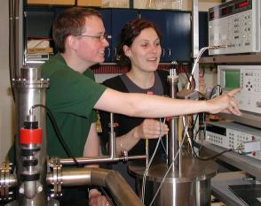
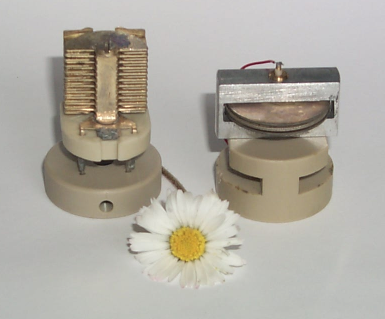
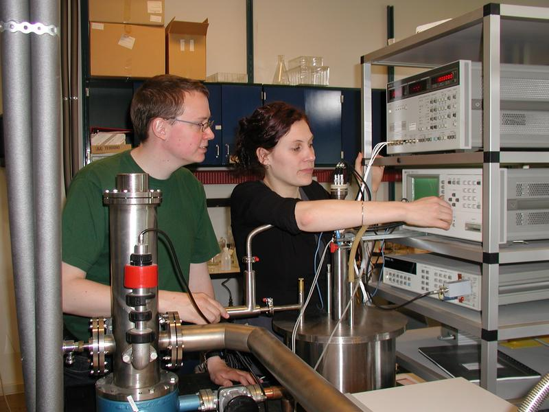
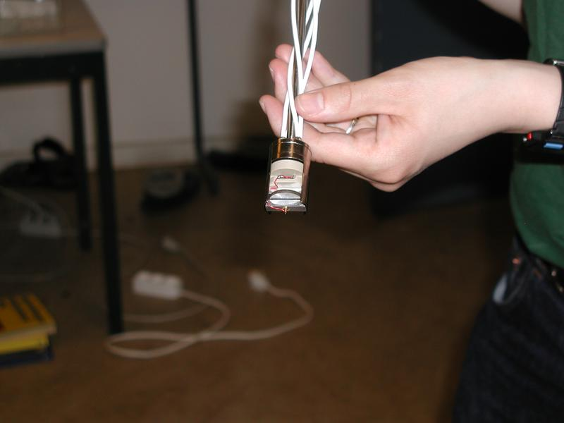
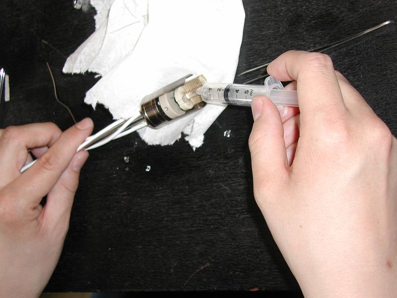

Dielectric and Shear Mechanical Relaxation in Glass Forming Liquids
A thorough analysis and experimental test of the DiMarzio-Bishop model
Master Thesis by Bo Jakobsen and Kristine Niss, supervised by Niels Boye Olsen (2003).The work presented on this page has been performed on the Department of Mathematics and Physics IMFUFA, at Roskilde University RUC, where we both have obtained a Master of Science in Physics and Mathematics (Cand. Scient. i fysik og matematik).You are welcome to contact us on boj@ruc.dk and kniss@ruc.dk and to visit our personal homepages (Bo Jakobsen and Kristine Niss) which include CV's and descriptions of earlier projects. The thesis is published as part of the IMFUFA text series as text 424. An electronic version is available as Postscript and PDF. Publications based on our workDielectric and shear mechanical relaxations in glass-forming liquids: A test of the Gemant-DiMarzio-Bishop modelKristine Niss, Bo Jakobsen, and Niels Boye Olsen, J. Chem. Phys., 123, 234510 (2005)
Dielectric and shear mechanical alpha and beta relaxations in seven
glass-forming liquids Different reviews of what we have doneAbstract of the thesisAbstract of a poster presented at the Danish Physical Society Annual Meeting 2003. Slides from talks and a posterDielectric and Shear Mechanical Relaxation in Viscous Liquids: Are they Connected? Slides from our talk at the meeting: "Viscous Liquids and the Glass Transition; Søminestationen 2003".Dielectric and Shear Mechanical Relaxation in Viscous Liquids: Are they Connected? Slides from our talk at the RUC-Risø workshop on "Structure and dynamics of metals and glasses". Not the same talk as above, this talk focus on the high frequency behavior, of the dielectric spectrum. Connection between shear mechanical relaxation and dielectric relaxation in viscoelastic liquids A poster presented at the Danish Physical Society Annual Meeting 2003.
| 
More pictures. |
Abstract of the thesis
The goal of this thesis is to elucidate whether a relation can be established between shear mechanical and dielectric relaxation in glass forming liquids. The starting point is a generalized Debye model, which has been proposed by DiMarzio and Bishop [J.Chem.Phys. 60 (1974) 3802].The DiMarzio-Bishop model is thoroughly analyzed and reformulated in such a way that different unphysical simplifications that have been used earlier, are avoided. New testable qualitative predictions of the DiMarzio-Bishop model are formulated and the model is put in a form where quantitative tests can be made by using only one macroscopic parameter.
The DiMarzio-Bishop model is tested by extensive dielectric and shear mechanical measurements on various molecular liquids. The shear mechanical measurements are performed using a transducer that has been developed at IMFUFA by Christensen and Olsen [Rev. Sci. Instrum. 66 (1995) 5019]. This transducer allows measurements to be made in an exceptionally large frequency range (1mHz-50kHz). The systematic errors and uncertainties of the two measuring methods are analyzed in detail. Furthermore these errors and uncertainties are taken into account in the reformulation and tests of the DiMarzio-Bishop model.
It is found that the DiMarzio-Bishop model to a large extend has qualitative agreement with our data and data from the literature, whereas the quantitative agreement is moderate or poor depending on the liquid tested. This suggests that the model is too coarse grained to capture details of the relaxation processes, but that it does in fact capture the fundamentals of the physics involved, and consequently that there is a direct relation between shear mechanical relaxation and dielectric relaxation.
Abstract of a poster
presented at the Danish Physical Society Annual Meeting 2003.A viscoelastic liquid behaves as a liquid at long time scales whereas it behaves as a solid on short time scales, and the characteristic time scale of the corresponding relaxation is strongly temperature dependent. The temperature dependence and the nature of this relaxation are the most fundamental questions in this area of research.
We study the relaxation process by measuring and comparing the frequency dependency of the shear mechanical modulus and of the dielectric constant. The primary motivation for this is that any relation between shear- and dielectric relaxation, whether quantitative or qualitative, would be a stepping stone in the direction of understanding the microscopic dynamics behind the relaxation processes.
The study is based on measurements on various molecular liquids and small polymers. The dielectric measurements are performed using standard methods (1mHz-1MHz), whereas the shear mechanical measurements are performed using a transducer which has been developed at IMFUFA [Rev. Sci. Instrum. 66 (1995) 5019] to obtain a large frequency range (1mHz-50kHz).
The temperature dependency of the two relaxations are compared and a model [J. Chem. Phys. 60 (1974) 3802], [J. Non-Cryst. Solids, 172-174 (1994) 357] of the connection between the two relaxation processes is tested.
Scope of our work
The main goal of the thesis is to elucidate whether a quantitative relation can be established between shear mechanical and dielectric relaxation in glass-forming liquids. This is done with special focus on liquids that exhibit a secondary relaxation process. The study has two main motivations: 1) Such a relation would be a very strong tool in testing the shoving model [Phys. Rev. B 53 (1996) 2171]. This model is difficult to test on substances with a secondary relaxation because it includes the values of the shear modulus in the megahertz region, which can not yet be measured; the dielectric constant however is easily measured in this region. 2) Any relation between shear- and dielectric relaxation, whether quantitative or qualitative, would be a stepping stone in the direction of understanding the microscopic dynamics behind relaxation processes (especially the secondary relaxation which is still strongly debated [Non-Cryst. Solids, 307-310 (2002) 317], and on how the many different relaxations (heat capacity, bulk modulus, thermal expansivity) are related.The starting point has been a generalized Debey model which has been proposed in two slightly different versions in [J.Chem.Phys. 60 (1974) 3802] and [J.Non-Cryst. Solids, 172-174 (1994) 357]. In the master thesis this model has been thoroughly analyzed and reformulated such that different erroneous simplifications which have been used earlier are avoided.
The model is tested by extensive dielectric and shear mechanical measurements on various molecular liquids. The dielectric measurements are standard whereas the shear mechanical measurements are performed using a transducer which has been developed at IMFUFA [Rev. Sci. Instrum. 66 (1995) 5019] allowing measurements to be made in large frequency range (1mHz-50kHz), and hereby obtaining the best possible test of the model. The liquids are chosen in two catagories: 1) Liquids that exhibit no secondary relaxation and obey time-temperature superposition are examined in order to test the model for these ``well behaved'' liquids. 2) Liquids with secondary relaxations are chosen such that the loss peak of the secondary relaxation lies in the narrow interval where it can be separated from the primary relaxation and still be access by the shear mechanical measurements (100Hz-1kHz). One of the reasons to chose liquids with a secondary relaxation is that it gives us a relaxation spectrum with more features which the model has to capture in order to fit. It also opens the possibility of examining whether the model holds better for the primary than the secondary relaxation, as it has been suggested in [J. Chem. Phys.107 (1997) 3645].
More pictures.
The multilayered capacitor, the PSG and a daisy (a flower with radius of approximately 1cm).

The student lab.

Us in the lab.

We are still in the lab.

The shear mechanical transducer (PSG).

Filling of the dielectric measuring cell.

Our HP-LCR meter.

A very primitive N2 atmosphere setup.

Bo placing the sample in the cryostat.

Kristine connecting the setup.

A group picture from the workshop: "Viscous Liquids and the Glass
Transition; Søminestationen 2003"